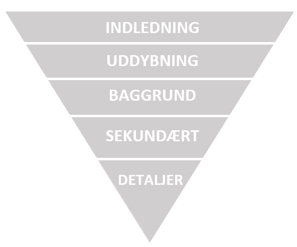
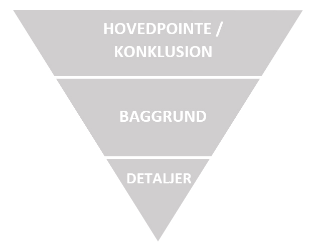

Tekstproduktion
Exordium & Corpus elementer
Nyhedskriterier
Nyhedstrekanten
Webtekst
Gode Råd:
Når vi taler om tekst, og tekstens virkemidler kan vi starte med at have fokus på de 4 sprogdyder som er hhv.
Når vi producere en tekst uanset mediet den er tilegnet, er vi nødt til at forstå hvordan mennesket i gennemsnit læser en tekst. Processen går som følgende:
Vores påstand og belæg / argumentation i vores tekst. Et exordium element vil være en påstand, og i nyhedsartikler ses det ofte i overskriften, der er skabt til at pique læserens interesse. Dette gøres ved at præsentere læseren for en påstand.
Corpus elementer er modsat vores argumenter for vores exordium element. Det vil være brødteksten af vores tekst, og vil være her vi argumentere for vores påstand(e).
Skal vi skrive en nyhedsartikel evt. som journalist, eller for at præsentere en virksomhedsprodukt eller service, er der nogle kriterier denne artikel bør fastholde. Disse kriterier er som følgende:
Ved at følge disse nyhedskriterier vil du få 3 ting ud af det:
Men er det bare dét når man skriver nyhedsartikler? – Nej, langt fra! Når vi skriver vores nyhedsartikler, så er der en hvis ”opskrift” til hvordan vores informationer skal præsenteres og vi kan med fordel følge Nyhedstrekanten
Dette vil ofte være hvordan en nyhedsartikel set i nationale fysiske aviser ser ud, men hvordan vil det se ud på nettet? Vi kan igen gøre brug af Nyhedstrekanten, men på en anderledes måde som set nedenfor.
Når vi skriver artikler på nettet så har vi meget mindre tid til at fange vores læsers interesse, så vi skal præsentere vores hovedpointe og konklusion allerede i overskriften. Derfra kan vores læsere klikke ind på artiklen hvis de er interesseret i at læse mere om baggrunden for historien, og evt. detaljer.
Det leder os let og elegant videre til hvordan man skriver Webtekst.
Når vi skriver tekst til web, er det en fordel at have følgende i betragtning:
Under uddannelsen har jeg selv har fornøjelsen af, at skrive nogle tekster til en fiktiv virksomhed. Du kan læse disse tekster på følgende links:


- Aptum (Hensigtmæssighed) - Er betegnelsen for om afsenderen opnår sit mål med teksten, og om teksten er tilpasset til at opnå dette. Emnet, modtager og deres viden er taget i betragtning til formuleringen af teksten.
- Puritas (Korrekthed / Renhed) - Omhandler bl.a. sprogets regler såsom grammatik, stavning, syntakst mm.
- Ornauts (Udsmykning) - Sproglig udsmykning der gør sproget mere levende for modtageren. - Ikke blot sproglig udsmykning men også at skabe en levende og overbevisende præsentation af emnet som er med til at gøre det relevant og personligt for modtageren.
- Perspicuitas (Klarhed) - Gør teksten nem at forstå for modtageren. Fagsprog og fremmedsprog kan være med til at fremmedgøre teksten til modtageren, og skabe større afstand i mellem dem og budskabet.
- Scanning Læseren orienterer sig kort om teksten og dens indhold. Dette bliver gjort meget overfladisk ved at kigge på billeder, overskrifter, nøgleord og korte beskrivelser.
- Skimming Læseren danner en helhedsforståelse eller forestilling om teksten og dens indhold.
- Læsning Den aktuelle læsning på baggrund af det store billede og de mindre elementer.
- Checking En betragtning af helheden i den læste tekst hvor scanning, skimming og læsning bliver taget i betragtning.
- En god webtekst hjælper ALTID sine læsere videre - Fasthold læserens interesse.
- En god webtekst videreformidler IKKE bare en historie - Vi forsøger at konvertere vores læsere enten til kunder, subscribers eller lignende.
- En god webtekst hjælper læseren med at træffe en beslutning - Et call to action (CTA), hvor vi henviser læseren til at gøre noget, dette kunne fx være at skrive sig op til nyhedsmails eller købe et produkt eller en service.
- En god webtekst tænker ALTID i SEO - Flere hits på søgemaskiner skaber bedre trafik, som i den sidste ende får flere læsere til at følge dit CTA.
- Skrive korte afsnit, og direkte til modtageren.
- Skriv konkret og stil spørgsmål for at aktivere læserens tanker.
- Gør det abstrakte nærværende igennem illustrationer og eksempler.
- Gentag pointer og/eller nøgleord.
- Fremhæv tegnsætning og/eller afsnit.
- Skab en rød tråd for læseren.
- Skriv læsevenlige og mundtlige tekster, men IKKE talesprog.
- Kvalitet - Bedre indhold som rammer målgruppen vil være med til at skabe værdi.
- Delinger - Indhold som er væsentligt, sensationelt, skaber konflikt mm. Er med til at få folk til at dele teksten både af og på de sociale medier.
- Links - Mere trafik til egen hjemmeside er altid godt for Search Engine Optimization (SEO)
- Væsentlighed Noget der har grundlæggende betydning eller konsekvens for mange mennesker. Ex: "Skatten stiger næste år."
- Sensation Noget der fascinerer eller chokerer. Ofte de små, skæve historier i nogle aviser, som kan være forsidehistorier i andre aviser. Ex: "Mand bider hund" eller "Kvinde overlevede en måned under sammenstyrtet hus."
- Konflikt Når sager eller personer er på kollisionskurs. Ex: "Vred far anklager kommune for sjusk.
- Identifikation Noget som læseren kan genkende sig selv i. En historie, der får læseren til at tænke "Det kunne være mig", "Bare det var mig" eller "Godt, det ikke er mig". Ex: "Ni ud af ti danskere spiser for meget sukker."
- Aktualitet Altså noget der er oppe i tiden. Historien må gerne udspringe af stof som i forvejen cirkulerer i andre medier. Langt de fleste nyheder udspringer af dette nyhedskriterium. Ex: "Et parti vælger ny formand eller et containerskib er sejlet ind i en bro."
- Indledning - Introducere læseren for indholdet (hvem, hvad, hvor, hvårnår?)
- Uddybning - Information som udvider forståelsen for indledningen, og forklarer hvad der er sket.
- Baggrund - Udsagn, øjenvidner, eksperter på emnet.
- Sekundære emner - Konsekvenser eller følger af nyheden, og hvad der gøres ved det her fra.
- Detaljer - Hvem er de skyldige? Hvem er indblandet?